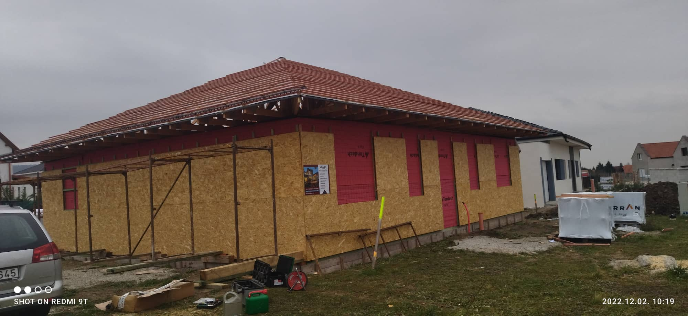

IMMO Építészet. Kulcsrakészen adjuk át a legmodernebb, stílusos és elegáns otthonokat! Érdeklődjön itt!
Tekintse meg galériánkat is, ahol rengeteg referencia fotó található, az akutális munkálatokról, felújításokról.
Több mint 30 évnyi Németországban szerzett tapasztalattal!
Modern ház építés
Modern ház építés
Vállalunk modern házaknak az építését is, amelyet korszerű szerszámokkal és biztos szaktudással, és tapasztalattal hajtunk végre. A referencia fotókon látszik a precizitás és a pontosság is. Keressen meg minket ezzel kapcsolatosan itt!
Könnyű szerkezetes házak
Könnyű szerkezetes házak építésével is foglalkozunk, amelyet szintén korszerű szerszámokkal, és maximális precizitással vitelezünk ki. Keressen meg minket ezzel kapcsolatosan itt!
Téglaházak

Vállalunk téglaház építést is, megfelelő szakemberekkel és szaktudással természetesen.
Generálkivitelezés, felújítás, tanácsadás, tetőszerkezetek és nyílászárók és tervezés
Mindezek mellett, generálkivitelezéssel, felújítással, tanácsadással, és tetőszerkezetek építésével és javításával, és nyílászárók cseréjével is foglalkozunk. Mindegyik munkához megvan a szükséges felszerelésünk, a legprofibb szerszámokkal, és gépekkel dolgozunk, amely elhanyagolhatatlan. Pontos, precíz, szép és profi munkát hajtunk végre. Olyan munkákat is el tudunk vállalni, ahova még szükséges folyamatok közé sorolandó a tervezés is.
Jogászok és mesteremberek a csapatban!
A csapatunk két jogi ügyekkel foglalkozó ügyintéző van (Krizsán Zsolt, Kátai Kornél), egy mesterember (Kátai Ottó), és egy értékesítő (Kátai Kiss Anna). Ezen felül természetesen megfelelő tapasztalattal és precizitással rendelkező szakemberek is részt vesznek az építkezésben, felújításban stb.